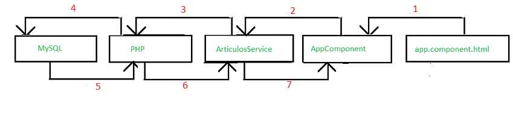

28 - Comunicación entre Angular y PHP
Hemos dicho que Angular es un framework para el desarrollo de aplicaciones web de una sola página. Una situación muy común es tener que almacenar en un servidor de internet los datos que se ingresan en la aplicación Angular.
Existen muchas tecnologías para procesar los datos que envía y recibe la aplicación Angular, una de la más extendidas en el lenguaje PHP y mediante este acceder a una base de datos MySql.
En este concepto dejaremos en forma muy clara todos los pasos que debemos desarrollar tanto en el cliente (aplicación angular) como en el servidor (aplicación PHP y MySql)
Problema
Confeccionar una aplicación que permita administrar una lista de artículos, cada artículo almacena el código, descripción y precio . Se debe poder agregar, borrar y modificar los datos de un artículo almacenados en una base de datos MySQL y accedida con una programa en PHP.
-
Desde la línea de comandos de Node.js procedemos a crear el proyecto016:
f:\angularya> ng new proyecto016
-
Recordemos que la propuesta del framework de Angular es delegar todas las responsabilidades de acceso a datos (peticiones y envío de datos) y lógica de negocios en otras clases que colaboran con las componentes. Estas clases en Angular se las llama servicios.
Crearemos el servicio 'articulos' para ello utilizamos Angular CLI:
f:\angularya\proyecto16\> ng generate service articulos
Con el comando anterior estamos creando la clase 'ArticulosService'El código que debemos guardar en el archivo 'articulos.service.ts' es:
import { Injectable } from '@angular/core'; import { HttpClient } from '@angular/common/http'; @Injectable({ providedIn: 'root' }) export class ArticulosService { url='https://scratchya.com.ar/angular/proyecto016/'; // disponer url de su servidor que tiene las páginas PHP constructor(private http: HttpClient) { } recuperarTodos() { return this.http.get(`${this.url}recuperartodos.php`); } alta(articulo:any) { return this.http.post(`${this.url}alta.php`, JSON.stringify(articulo)); } baja(codigo:number) { return this.http.get(`${this.url}baja.php?codigo=${codigo}`); } seleccionar(codigo:number) { return this.http.get(`${this.url}seleccionar.php?codigo=${codigo}`); } modificacion(articulo:any) { return this.http.post(`${this.url}modificacion.php`, JSON.stringify(articulo)); } }Presentaremos primero todos los archivos y luego explicaremos como se relacionan.
-
El archivo 'app.module.ts' se modifica con el siguiente código:
import { BrowserModule } from '@angular/platform-browser'; import { NgModule } from '@angular/core'; import { FormsModule } from '@angular/forms'; import { AppComponent } from './app.component'; import {HttpClientModule} from '@angular/common/http'; @NgModule({ declarations: [ AppComponent ], imports: [ BrowserModule, FormsModule, HttpClientModule ], providers: [], bootstrap: [AppComponent] }) export class AppModule { } -
Nuestra única componente debe implementar el siguiente código en el archivo 'app.component.ts':
import { Component, OnInit } from '@angular/core'; import { ArticulosService } from './articulos.service'; @Component({ selector: 'app-root', templateUrl: './app.component.html', styleUrls: ['./app.component.css'] }) export class AppComponent implements OnInit { articulos:any; art={ codigo:0, descripcion:"", precio:0 } constructor(private articulosServicio: ArticulosService) {} ngOnInit() { this.recuperarTodos(); } recuperarTodos() { this.articulosServicio.recuperarTodos().subscribe((result:any) => this.articulos = result); } alta() { this.articulosServicio.alta(this.art).subscribe((datos:any) => { if (datos['resultado']=='OK') { alert(datos['mensaje']); this.recuperarTodos(); } }); } baja(codigo:number) { this.articulosServicio.baja(codigo).subscribe((datos:any) => { if (datos['resultado']=='OK') { alert(datos['mensaje']); this.recuperarTodos(); } }); } modificacion() { this.articulosServicio.modificacion(this.art).subscribe((datos:any) => { if (datos['resultado']=='OK') { alert(datos['mensaje']); this.recuperarTodos(); } }); } seleccionar(codigo:number) { this.articulosServicio.seleccionar(codigo).subscribe((result:any) => this.art = result[0]); } hayRegistros() { return true; } } -
Y el archivo 'app.component.html' con:
<div> <h1>Administración de artículos</h1> <table border="1" *ngIf="hayRegistros(); else sinarticulos"> <tr> <td>Codigo</td><td>Descripcion</td><td>Precio</td><td>Borrar</td><td>Seleccionar</td> </tr> <tr *ngFor="let art of articulos"> <td>{{art.codigo}}</td> <td>{{art.descripcion}}</td> <td>{{art.precio}}</td> <td><button (click)="baja(art.codigo)">Borrar?</button></td> <td><button (click)="seleccionar(art.codigo)">Seleccionar</button></td> </tr> </table> <ng-template #sinarticulos><p>No hay articulos.</p></ng-template> <div> <p> descripcion:<input type="text" [(ngModel)]="art.descripcion" /> </p> <p> precio:<input type="number" [(ngModel)]="art.precio" /> </p> <p><button (click)="alta()">Agregar</button> <button (click)="modificacion()">Modificar</button></p> </div> </div>Todos los archivos presentados son los necesarios en Angular, veamos ahora que tenemos en PHP y MySQL.
-
Primero debemos crear una base de datos en MySQL llamada 'bd1' y crear la siguiente tabla:
CREATE TABLE articulos ( codigo int AUTO_INCREMENT, descripcion varchar(50), precio float, PRIMARY KEY (codigo) )
-
Tenemos una serie de archivos PHP que reciben datos en formato JSON y retornan también un JSON.
El archivo 'recuperartodos.php' retorna en formato JSON todos los artículos:
<?php header('Access-Control-Allow-Origin: *'); header("Access-Control-Allow-Headers: Origin, X-Requested-With, Content-Type, Accept"); require("conexion.php"); $con=retornarConexion(); $registros=mysqli_query($con,"select codigo, descripcion, precio from articulos"); $vec=[]; while ($reg=mysqli_fetch_array($registros)) { $vec[]=$reg; } $cad=json_encode($vec); echo $cad; header('Content-Type: application/json'); ?> -
El archivo 'alta.php' recibe los datos en formato JSON y los almacena en la tabla:
<?php header('Access-Control-Allow-Origin: *'); header("Access-Control-Allow-Headers: Origin, X-Requested-With, Content-Type, Accept"); $json = file_get_contents('php://input'); $params = json_decode($json); require("conexion.php"); $con=retornarConexion(); mysqli_query($con,"insert into articulos(descripcion,precio) values ('$params->descripcion',$params->precio)"); class Result {} $response = new Result(); $response->resultado = 'OK'; $response->mensaje = 'datos grabados'; header('Content-Type: application/json'); echo json_encode($response); ?> -
El archivo 'baja.php':
<?php header('Access-Control-Allow-Origin: *'); header("Access-Control-Allow-Headers: Origin, X-Requested-With, Content-Type, Accept"); require("conexion.php"); $con=retornarConexion(); mysqli_query($con,"delete from articulos where codigo=$_GET[codigo]"); class Result {} $response = new Result(); $response->resultado = 'OK'; $response->mensaje = 'articulo borrado'; header('Content-Type: application/json'); echo json_encode($response); ?> -
El archivo 'modificacion.php':
<?php header('Access-Control-Allow-Origin: *'); header("Access-Control-Allow-Headers: Origin, X-Requested-With, Content-Type, Accept"); $json = file_get_contents('php://input'); $params = json_decode($json); require("conexion.php"); $con=retornarConexion(); mysqli_query($con,"update articulos set descripcion='$params->descripcion', precio=$params->precio where codigo=$params->codigo"); class Result {} $response = new Result(); $response->resultado = 'OK'; $response->mensaje = 'datos modificados'; header('Content-Type: application/json'); echo json_encode($response); ?> -
El archivo 'seleccionar.php':
<?php header('Access-Control-Allow-Origin: *'); header("Access-Control-Allow-Headers: Origin, X-Requested-With, Content-Type, Accept"); require("conexion.php"); $con=retornarConexion(); $registros=mysqli_query($con,"select codigo, descripcion, precio from articulos where codigo=$_GET[codigo]"); if ($reg=mysqli_fetch_array($registros)) { $vec[]=$reg; } $cad=json_encode($vec); echo $cad; header('Content-Type: application/json'); ?> -
El archivo 'conexion.php':
<?php function retornarConexion() { $con=mysqli_connect("localhost","root","","bd1"); return $con; } ?>
El resultado de ejecutar esta aplicación en el navegador, teniendo en funcionamiento el servidor con PHP y MySQL es:
Explicación
Ahora veremos como funciona esta aplicación cliente/servidor implementada con Angular en el cliente y PHP en el servidor.
Recuperación de todos los registros
Inmediatamente se inicia la aplicación Angular se crea el objeto de la clase 'AppComponent' (nuestra única componente), en esta clase debe llegar al constructor el objeto de la clase 'ArticulosService':
constructor(private articulosServicio: ArticulosService) {}La clase ArticulosService está creada en el archivo 'articulos.service.ts':
export class ArticulosService { ... }En ningún momento creamos un objeto de ésta clase, sino el framework de Angular se encarga de esto.
Volviendo al archivo app.component.ts en el método ngOnInit procedemos a llamar al método recuperarTodos:
ngOnInit() { this.recuperarTodos(); }recuperarTodos tiene por objetivo utilizar el 'servicio' que llega al constructor para llamar al método 'recuperarTodos' del servicio propiamente dicho:
recuperarTodos() { this.articulosServicio.recuperarTodos().subscribe((result:any) => this.articulos = result); }Si vemos ahora el método 'recuperarTodos' de la clase 'ArticulosService', es el que tiene la responsabilidad de hacer una petición al servidor:
recuperarTodos() { return this.http.get(`${this.url}recuperartodos.php`); }El método 'recuperarTodos' de la clase 'ArticulosService' retorna un objeto de la clase 'HttpClient'.
Ahora debemos entender porque podemos llamar al método 'suscribe':
recuperarTodos() { this.articulosServicio.recuperarTodos().subscribe((result:any) => this.articulos = result); }El método 'suscribe' recibe los resultados y procedemos a asignar a la propiedad 'articulos', con esto, Angular se encarga de actualizar la página con todos los artículos recuperados. El proceso de actualizar la página sucede en el archivo 'app.component.html':
<div> <h1>Administración de artículos</h1> <table border="1" *ngIf="hayRegistros(); else sinarticulos"> <tr> <td>Codigo</td><td>Descripcion</td><td>Precio</td><td>Borrar</td><td>Seleccionar</td> </tr> <tr *ngFor="let art of articulos"> <td>{{art.codigo}}</td> <td>{{art.descripcion}}</td> <td>{{art.precio}}</td> <td><button (click)="baja(art.codigo)">Borrar?</button></td> <td><button (click)="seleccionar(art.codigo)">Seleccionar</button></td> </tr> </table> <ng-template #sinarticulos><p>No hay articulos.</p></ng-template> <div> <p> descripcion:<input type="text" [(ngModel)]="art.descripcion" /> </p> <p> precio:<input type="number" [(ngModel)]="art.precio" /> </p> <p><button (click)="alta()">Agregar</button> <button (click)="modificacion()">Modificar</button></p> </div> </div>El flujo de la información lo podemos representar con el siguiente esquema:
Alta
Veamos ahora los pasos cuando se agrega una fila en la tabla 'articulos'. Todo comienza cuando el operador presiona el botón de 'Agregar':

La etiqueta button tiene enlazado la llamada al método 'alta':
<p><button (click)="alta()">Agregar</button>El método 'alta' se encuentra codificado en el archivo 'app.component.ts' dentro de la clase 'AppComponent':
alta() { this.articulosServicio.alta(this.art).subscribe((datos:any) => { if (datos['resultado']=='OK') { alert(datos['mensaje']); this.recuperarTodos(); } }); }En este método procedemos a llamar al método 'alta' de la clase 'ArticulosService' y se le pasa como parámetro la propiedad 'art' que almacena la descripción y precio del artículo que el operador acaba de ingresar por teclado.
El método 'alta' de la clase 'ArticulosService' hace la llamada al servidor mediante el objeto 'http' de la clase 'HttpClient'. Se utiliza el método 'post' ya que se enviarán datos al servidor:
alta(articulo:any) { return this.http.post(`${this.url}alta.php`, JSON.stringify(articulo)); }Ahora se ejecuta el programa PHP definido en el archivo 'alta.php' donde procedemos a efectuar el insert en la tabla de MySQL:
<?php header('Access-Control-Allow-Origin: *'); header("Access-Control-Allow-Headers: Origin, X-Requested-With, Content-Type, Accept"); $json = file_get_contents('php://input'); $params = json_decode($json); require("conexion.php"); $con=retornarConexion(); mysqli_query($con,"insert into articulos(descripcion,precio) values ('$params->descripcion',$params->precio)"); class Result {} $response = new Result(); $response->resultado = 'OK'; $response->mensaje = 'datos grabados'; header('Content-Type: application/json'); echo json_encode($response); ?>También dentro del programa PHP procedemos a retornar en formato JSON que la operación se efectuó en forma correcta.
En el método 'alta' de la clase 'AppComponent' que ya vimos, recibe los datos de la respuesta JSon, mostrando un mensaje si la carga se efectuó correctamente:
alta() { this.articulosServicio.alta(this.art).subscribe((datos:any) => { if (datos['resultado']=='OK') { alert(datos['mensaje']); this.recuperarTodos(); } }); }También llamamos al método 'recuperarTodos' con el objetivo que se actualice la pantalla con los datos actuales de la tabla 'articulos'.
El flujo de la información para efectuar el 'alta' de un articulo en la base de datos es::

La actualización de la página HTML la logramos llamando al método 'recuperarTodos'.
Baja
El borrado de un artículo se efectúa cuando el operador presiona el botón con la etiqueta 'Borra?':
<td><button (click)="baja(art.codigo)">Borrar?</button></td>Se llama al método 'baja' de la clase 'AppComponent' y se le pasa como parámetro el código de artículo a borrar.
El método baja:
baja(codigo:number) { this.articulosServicio.baja(codigo).subscribe((datos:any) => { if (datos['resultado']=='OK') { alert(datos['mensaje']); this.recuperarTodos(); } }); }Llmamos al método 'baja' de la clase 'ArticulosService' y le pasamos como parámetro el código de artículo que queremos borrar.
El método 'baja' de la clase 'ArticulosService' procede a llamar al archivo baja.php y le pasa como parámetro el código de artículo que se debe borrar:
baja(codigo:number) { return this.http.get(`${this.url}baja.php?codigo=${codigo}`); }Ahora en el servidor se ejecuta la aplicación PHP baja.php:
<?php header('Access-Control-Allow-Origin: *'); header("Access-Control-Allow-Headers: Origin, X-Requested-With, Content-Type, Accept"); require("conexion.php"); $con=retornarConexion(); mysqli_query($con,"delete from articulos where codigo=$_GET[codigo]"); class Result {} $response = new Result(); $response->resultado = 'OK'; $response->mensaje = 'articulo borrado'; header('Content-Type: application/json'); echo json_encode($response); ?>Luego en el método 'baja' de la clase 'AppComponent' podemos mostrar un mensaje si la baja se ejecutó con éxito:
baja(codigo:number) { this.articulosServicio.baja(codigo).subscribe((datos:any) => { if (datos['resultado']=='OK') { alert(datos['mensaje']); this.recuperarTodos(); } }); }Como podemos ver para actualizar la pantalla procedemos a llamar al método 'recuperarTodos'.
Consulta
La consulta o selección se dispara cuando el operador presiona el botón que tiene la etiqueta 'Seleccionar' y tiene por objetivo mostrar en los dos controles 'text' la descripción y precio del artículo:
<td><button (click)="seleccionar(art.codigo)">Seleccionar</button></td>Al presionar el botón se llama el método 'seleccionar' de la clase 'AppComponent':
seleccionar(codigo:number) { this.articulosServicio.seleccionar(codigo).subscribe((result:any) => this.art = result[0]); }Ahora llamamos al método 'seleccionar' de la clase 'ArticulosService':
seleccionar(codigo:number) { return this.http.get(`${this.url}seleccionar.php?codigo=${codigo}`); }Recuperamos del servidor llamando a la página 'seleccionar.php' los datos del artículo cuyo código pasamos como parámetro :
<?php header('Access-Control-Allow-Origin: *'); header("Access-Control-Allow-Headers: Origin, X-Requested-With, Content-Type, Accept"); require("conexion.php"); $con=retornarConexion(); $registros=mysqli_query($con,"select codigo, descripcion, precio from articulos where codigo=$_GET[codigo]"); if ($reg=mysqli_fetch_array($registros)) { $vec[]=$reg; } $cad=json_encode($vec); echo $cad; header('Content-Type: application/json'); ?>La ejecución del programa en PHP procede a recuperar la fila de la tabla que coincide con el código enviado y lo retorna con formato JSON.
En el método 'seleccionar' de la clase AppComponent al ejecutarse el método subscribe almacena en la propiedad 'art' el resultado devuelto por el servidor (con esta asignación se actualizan los dos controles 'input' del HTML):
seleccionar(codigo:number) { this.articulosServicio.seleccionar(codigo).subscribe((result:any) => this.art = result[0]); }Modificación
El último algoritmo que implementa nuestra aplicación es la modificación de la descripción y precio de un artículo que seleccionemos primeramente.
Cuando presionamos el botón que tiene la etiqueta 'Modificar' se ejecuta el método 'modificación':
<button (click)="modificacion()">Modificar</button></p>El método 'modificación' se implementa en la clase 'AppComponent':
modificacion() { this.articulosServicio.modificacion(this.art).subscribe((datos:any) => { if (datos['resultado']=='OK') { alert(datos['mensaje']); this.recuperarTodos(); } }); }Lo primero que hacemos en este método es llamar al método 'modificación' de la clase 'ArticulosService' y pasar como dato todos los datos del artículo seleccionado y las posibles modificaciones efectuadas.
El método 'modificacion' de la clase 'ArticulosService':
modificacion(articulo:any) { return this.http.post(`${this.url}modificacion.php`, JSON.stringify(articulo)); }Accede al servidor pidiendo el archivo 'modificacion.php' y pasando todos los datos del artículo mediante un 'post'.
El archivo 'modificacion.php' procede a cambiar la descripción y precio del artículo:
<?php header('Access-Control-Allow-Origin: *'); header("Access-Control-Allow-Headers: Origin, X-Requested-With, Content-Type, Accept"); $json = file_get_contents('php://input'); $params = json_decode($json); require("conexion.php"); $con=retornarConexion(); mysqli_query($con,"update articulos set descripcion='$params->descripcion', precio=$params->precio where codigo=$params->codigo"); class Result {} $response = new Result(); $response->resultado = 'OK'; $response->mensaje = 'datos modificados'; header('Content-Type: application/json'); echo json_encode($response); ?>En la clase 'AppComponent' podemos comprobar si el resultado fue 'OK' y actualizar nuevamente la página:
modificacion() { this.articulosServicio.modificacion(this.art).subscribe((datos:any) => { if (datos['resultado']=='OK') { alert(datos['mensaje']); this.recuperarTodos(); } }); }
Hemos explicado con este problema todos los pasos esenciales para implementar una aplicación en Angular que se comunica con un servidor web con PHP y acceder a una base de datos MySQL.
Puede probar funcionando esta aplicación de Angular desde aquí